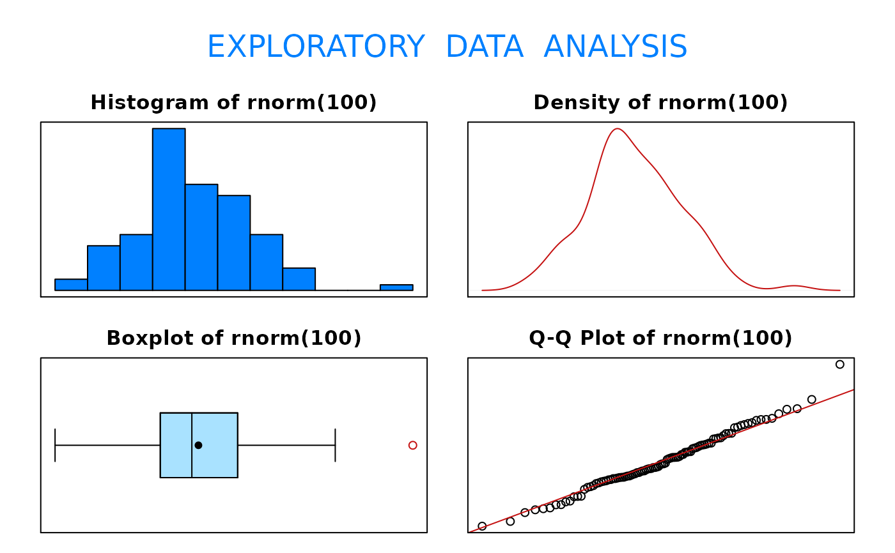

Function that produces a histogram, density plot, boxplot, and Q-Q plot
eda(x, trim = 0.05, dec = 3)
| x | is a numeric vector where |
|---|---|
| trim | is a fraction (between 0 and 0.5, inclusive) of values to be trimmed from each end of the ordered data such that if |
| dec | is a number specifying the number of decimals |
Function returns various measures of center and location. The values returned for the quartiles are based on the default R definitions for quartiles. For more information on the definition of the quartiles, type ?quantile and read about the algorithm used by type = 7.
The function eda() will not return console window information on data sets containing more than 5000 observations. It will, however, still produce graphical output for data sets containing more than 5000 observations.
Alan T. Arnholt <arnholtat@appstate.edu>
#> Size (n) Missing Minimum 1st Qu Mean Median TrMean 3rd Qu #> 100.000 0.000 -2.298 -0.651 -0.085 -0.110 -0.072 0.496 #> Max Stdev Var SE Mean I.Q.R. Range Kurtosis Skewness #> 2.039 0.882 0.777 0.088 1.147 4.337 -0.060 -0.153 #> SW p-val #> 0.884# Produces four graphs for the 100 randomly # generated standard normal variates.